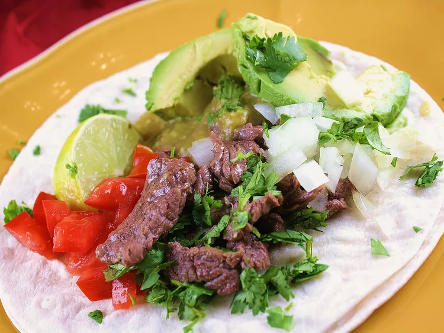

Tacos

Carne asada tacos.
Ingredients
- 1/2 a lb of chopped beef
- crushed red pepper
- 1 lime
- tomatillos 1 can
- 2 jalapenos
- canola oil
- Corn tortillas
- 2 chopped tomatoes
- 1 avocado
- 1 bunch of chopped cilantro
- 1 lemon
Steps
- Marinate beef in bowl with salt,pepper, crushed red pepper
and lime juce for about 30 minutes.
- In blender process jalapenos and tomatillos
- Gently toast processed mix with oil in a pan for 5 minutes.
- Get a skillet or griddle
- Cook beef in oil until crispy and brown. As the beef begins to finish cooking
heat tortillas on the same griddle as needed.
- Assemble the tacos with the cooked beef and tortillas.
- Add lemon, avocado and cilantro as preferred.